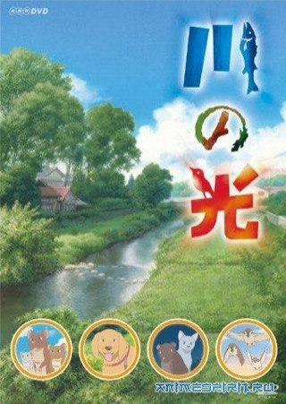

Light of the River
In brief
An animated family of river rats driven from their home by construction must find a new place to live in the city.
- Directed by
- Tetsuo Hirakawa
- Original title
- Kawa no Hikari
- Country
- Japan
- Year
- 2009
- Running time
- 75 minutes
- Language
- Japanese
- Festival section
- Children's FilmFest
- Screenings
- Sun Oct 9, 2:30 PM, 142 Throckmorton Theatre
Sun Oct 16, 2:15 PM, 142 Throckmorton Theatre
Source: Film schedule (page 33 of the PDF): Wayback Machine copy; Poster from FilmAffinity